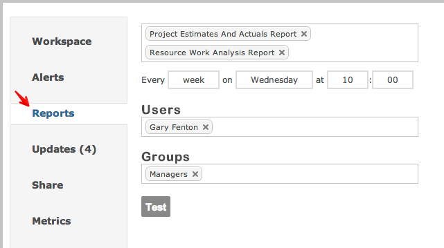

You can choose to send scheduled Excel reports delivered via email for any workspace.

You can select more than one report to schedule.
You can specify when the report is delivered: daily, weekly and at which time.
Click the Test button to receive a live report immediately so you can see what the report looks like.